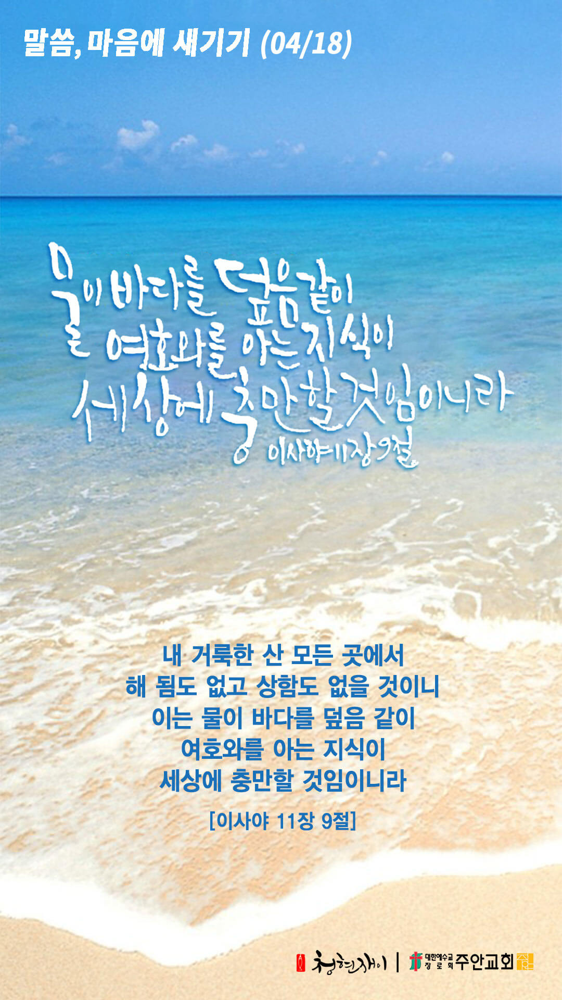

온라인 기도실 안내
2021년 04월18일(일)~04월24일(토)
- 온라인 기도실은 온 회중이 함께 주님 앞으로 나아가는 자리입니다
- 30분 정도 여유를 가지고 하시기 바랍니다
- 말씀과 묵상, 찬양과 기도로 나아갑니다
- 배경 음악이 나올 수 있습니다 볼륨을 조절해주세요
준비가 되셨으면 아래의 버튼을 눌러주세요
할렐루야
내 영혼아 여호와를 찬양하라
시 146:1
- 가사를 묵상하며 읽습니다
죄짐 맡은 우리 구주
어찌 좋은 친군지
걱정 근심 무거운 짐
우리 주께 맡기세
주께 고함 없는 고로
복을 얻지 못하네
사람들이 어찌하여
아뢸 줄을 모를까
할렐루야
내 영혼아 여호와를 찬양하라
시 146:1
- 가사를 묵상하며 읽습니다
시험걱정 모든 괴롬
없는 사람 누군가
부질없이 낙심 말고
기도 드려 아뢰세
이런 진실하신 친구
찾아볼 수 있을까
우리 약함 아시오니
어찌 아니 아뢸까
할렐루야
내 영혼아 여호와를 찬양하라
시 146:1
- 가사를 묵상하며 읽습니다
근심 걱정 무거운 짐
아니 진 자 누군가
피난처는 우리 예수
주께 기도 드리세
세상친구 멸시하고
너를 조롱하여도
예수 품에 안기어서
참된 위로 받겠네
할렐루야
내 영혼아 여호와를 찬양하라
시 146:1
죄짐 맡은 우리구주 by 김관호
위의 찬양이 끝나면 말씀읽기를 눌러주시면 됩니다
주의 말씀은 내 발에 등이요
내 길에 빛이니이다 시119:105
오늘의 말씀입니다
음악 소리가 크면 조절하시기 바랍니다
"나의 피난처 예수" 편곡 및 연주 by 이지선

마음의 묵상
시11:9
“내 거룩한 산 모든 곳에서 해 됨도 없고 상함도 없을 것이니 이는 물이 바다를 덮음 같이 여호와를 아는 지식이 세상에 충만할 것임이니라”
1. 주님 안에서 밝은 미래를 꿈꾸며 사시나요?
2. 여호와를 아는 지식이 충만하신가요?
3. 사람이 아니라 하나님께서 모든 것을 주관하심을 믿으시나요?
물이 바다를 덮음 같이 충만하게 하소서
회개, 삶의 방향을 바꾸는 결정
숨기지 않고 주님 앞에 내어놓는 자는 은혜를 받습니다
“자기의 죄를 숨기는 자는 형통하지 못하나 죄를 자복하고 버리는 자는 불쌍히 여김을 받으리라”
- 잠언 28장 13절 -
3분 정도 회개하며 주님 앞에 나아갑니다
사슴이 시냇물을 찾기에 갈급함 같이
시42:1
- 다음의 말씀을 소리 내어 읽습니다
[요한복음 15장 4-8절]
4 내 안에 거하라 나도 너희 안에 거하리라 가지가 포도나무에 붙어 있지 아니하면 스스로 열매를 맺을 수 없음 같이 너희도 내 안에 있지 아니하면 그러하리라
5 나는 포도나무요 너희는 가지라 그가 내 안에, 내가 그 안에 거하면 사람이 열매를 많이 맺나니 나를 떠나서는 너희가 아무 것도 할 수 없음이라
사슴이 시냇물을 찾기에 갈급함 같이
시42:1
- 다음의 말씀을 소리 내어 읽습니다
[요한복음 15장 4-8절]
6 사람이 내 안에 거하지 아니하면 가지처럼 밖에 버려져 마르나니 사람들이 그것을 모아다가 불에 던져 사르느니라
7 너희가 내 안에 거하고 내 말이 너희 안에 거하면 무엇이든지 원하는 대로 구하라 그리하면 이루리라
8 너희가 열매를 많이 맺으면 내 아버지께서 영광을 받으실 것이요 너희는 내 제자가 되리라
하나님 나라
1. 하나님의 나라가 속히 이 땅에 임하게 하소서
하나님 아버지,
전 세계 곳곳에서 코로나19가 다시 4차 대유행의 경향을 보이고 있습니다. 하나님께서 지쳐 있는 각국 정부와 의료진들,
그리고 국민들에게 다시 한번 새 힘을 주시고, 지금의 확산세가 속히 줄어들게 하소서. 악화 되고 있는 미얀마 땅에도
폭력이 그치고 학살이 발생하지 않게 지켜주시고, 속히 평화가 임하게 하소서.
간절한 마음으로 3분 정도 기도합시다
남과 북
2. 남북한이 속히 복음으로 통일되게 하소서
하나님 아버지,
북한 주민들이 기근과 질병에서 벗어나게 하시고, 자유와 복음을 마음껏 누리는 그 날이 오게 하소서.
남북한이 복음으로 통일되는 꿈과 비전을 품고 기도하는 기도의 용사들이 더욱 일어나게 하소서.
간절한 마음으로 3분 정도 기도합시다
대한민국
3. 우리나라가 하나님을 경외하는 나라가 되게 하소서
하나님 아버지,
2년 연속 전 세계 최하위인 출산율과 노령 인구의 증가로 우리 나라가 인구감소 국가가 되고 있습니다.
올바른 성경적 가치관 위에서 건강하고 행복한 가정들이 세워지게 하시고, 저출산의 문제도 해결하여 주소서. 코로나19로
인하여 우리 나라에 퍼져 있는 스트레스와 우울감이 떠나가게 하시고, 소망과 희망이 충만한 나라가 되게 하소서.
간절한 마음으로 3분 정도 기도합시다
한국교회
4. 한국교회가 성령으로 새롭게 부흥되게 하소서
하나님 아버지,
한국 교회의 각 교단 별로 노회가 진행되고 새로운 소명을 가진 목회자들의 안수가 이루어지고 있습니다.
노회로 모이는 목회자들이 하나님을 경외하며 하나님을 기쁘시게 하는 길을 걸어가게 하소서. 새롭게 안수 받는
목회자들이 온전한 복음을 선포하며, 보내심을 받은 사명을 성실히 감당하며 나아가게 하소서.
간절한 마음으로 3분 정도 기도합시다
주안교회
5. 주안교회가 다음 세대를 세우는 선교적 교회가 되게 하소서
하나님 아버지,
우리는 단 한순간도 주님의 은혜가 아니면 살아갈 수가 없습니다. 주안의 성도들이 삶의 어떤 시련과 고통속에서도 오직 은혜의
주님만을 바라보게 하시고, 죽음의 권세조차도 우리에게 영향을 미치지 못하게 막아주시는 주님만을 붙잡고, 그 주님을 담대하게
전하며 살아가는 우리들이 되게 하여 주옵소서.
간절한 마음으로 3분 정도 기도합시다
감사의 기도
- 오늘 기도를 인도하신 주님께 감사를 올려드립니다
- 아래의 구절을 읽고 주님께 감사의 마음을 올려드립시다
“이러므로 여호와여 내가 모든 민족 중에서 주께 감사하며 주의 이름을 찬양하리이다”
- 사무엘하 22장 50절 -
고요한 가운데 잠시 침묵하시기 바랍니다
파송, 세상을 향하여
- 오늘의 온라인 기도를 마쳤습니다
기도를 들으신 주님께서 평안히 가라 하십니다
주님께서 우리와 함께 하시니 두려울 것이 없습니다
새벽을 깨우며
- 새벽기도회 안내입니다